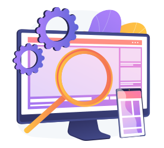
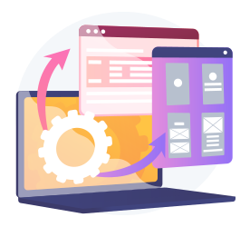
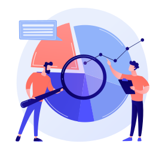

Configurar
Entender dónde estamos parados y hacia dónde queremos ir.
- Conocer las perspectivas y posibilidades desde el lado de Negocio, Desarrollo y UX sobre la solución.
- Definir la solución con los actores interesados desde el lado de Negocio, Desarrollo y UX.
- Comenzar a documentar el proceso, a agrupar la información, definir el proyecto en etapas y pasos a seguir.
Descubrir y empatizar
Conocer quién es mi usuario y cuál es su contexto.
- Investigar al usuario, su contexto, necesidades y aspiraciones.
- Conocer al mercado, las competencias y otras soluciones que utilizan los usuarios en su día a día.
- Recolectar información cuantitativa para trabajar con datos que permitan comparar en un futuro y que sean de utilidad para la toma de decisiones.
- Documentar y transformar los datos en información.

Definir e idear
Definir cuál es el problema y cómo resolvemos el problema.
- Entender el problema, sus causas y consecuencias.
- Realizar una puesta en común con los actores interesados para detectar oportunidades, posibilidades, restricciones y priorizar tareas.
- Definir la solución, su propósito, sus beneficios, los objetivos de negocio, de desarrollo y de UX. También conocer qué necesitamos medir, y cómo lo vamos a medir.
Prototipar y desarrollar
Diseñar cómo será y cómo funcionará la solución.
- Diseñar las diferentes pantallas y complementar con nuevos componentes al sistema de diseño.
- Coordinar con los developers el desarrollo de las pantallas.
- Acompañar a los developers en el testeo del desarrollo.


Monitorear y evaluar
Evaluar si la solución cubre las necesidades del usuario, si el usuario la utiliza.
- Relevar información cuantitativa y cualitativa de la solución sobre cómo y porqué los usuarios la utilizan.
- Testear la solución con los usuarios.
Comunicar
Ayudar a que el usuario conozca la solución y el valor le ofrece.
- Definir qué comunicar, cuándo hacerlo y qué medios utilizar.
- Diseñar templates para newsletter, notificaciones, gráficos y presentaciones.
- Desarrollar la documentación de la solución para los usuarios.
- Planificar onboarding, cursos y webinars sobre la solución.